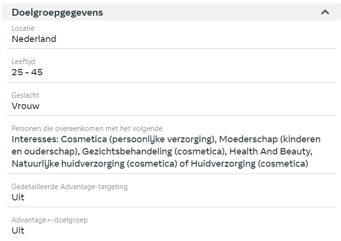
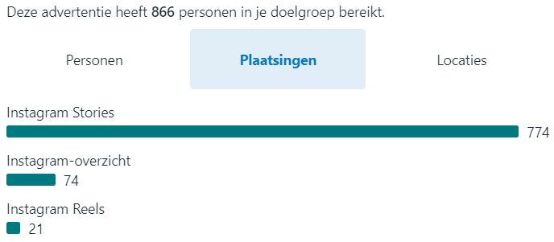
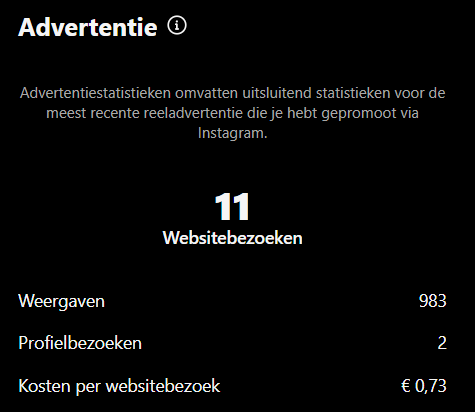

Reflectie en Groei
De afgelopen periode was voor mij echt een enorme leerervaring. Ik heb niet alleen mijn technische kennis kunnen verdiepen, maar ook mijn commerciële en analytische vaardigheden verder ontwikkeld. Vooral het effectief inzetten van advertenties en het verbeteren van mijn online zichtbaarheid door SEO waren twee grote focuspunten. In het begin vond ik het opzetten van advertenties via platforms zoals Instagram en Facebook best ingewikkeld. Er zijn zoveel opties en variabelen waar je rekening mee moet houden, dat het even duurde voordat ik echt doorhad hoe alles werkt. Maar door meer te oefenen, feedback te ontvangen en successen te analyseren, kreeg ik steeds meer grip op hoe je campagnes kunt optimaliseren om betere resultaten te halen.
Een ander gebied waarin ik flinke stappen heb gezet, is het schrijven van SEO-vriendelijke blogs. Aanvankelijk vond ik het lastig om de juiste zoekwoorden te vinden en de content logisch te structureren. Maar dankzij de richtlijnen die we kregen en de ervaring die ik heb opgedaan tijdens de projecten, weet ik nu hoe ik blogs kan schrijven die niet alleen waardevol zijn voor de lezer, maar ook goed scoren in zoekmachines.
Wat ik wel merkte, is dat ik meer tijd had kunnen besteden aan het verder uitbouwen van mijn advertentiecampagnes en het perfectioneren van de targetingopties. Als ik me daar meer in had verdiept, had ik waarschijnlijk nog betere conversies kunnen halen en mijn advertentiebudget efficiënter kunnen inzetten. Dit is een belangrijk leerpunt voor de toekomst. Daarom wil ik me verder verdiepen in advanced targeting en conversieoptimalisatie. Mijn doel is om met een kleiner budget hogere resultaten te behalen en nog strategischer te werk te gaan in mijn campagnes.
Persoonlijke Conclusie
Deze minor heeft me enorm veel gebracht, zowel op persoonlijk als professioneel vlak. Het was een periode waarin ik niet alleen mijn vaardigheden op het gebied van online marketing heb verbeterd, maar ook mijn vertrouwen in mijn eigen aanpak heb vergroot. Ik voel me nu veel beter voorbereid om mijn bedrijf naar een hoger niveau te tillen. Ik heb geleerd hoe ik advertenties en SEO effectief kan inzetten, maar ook hoe ik data uit campagnes kan gebruiken om mijn strategieën steeds verder aan te scherpen. Het is mooi om te zien hoe theorie en praktijk elkaar hierin versterken.
Voor de toekomst wil ik me meer gaan richten op geavanceerde technieken voor targeting en conversieoptimalisatie. Mijn ultieme doel is om mijn online marketingstrategie nog slimmer en effectiever te maken. Ik wil niet alleen mijn eigen onderneming verder laten groeien, maar ook meer waarde kunnen bieden aan klanten en andere samenwerkingen.
Mijn Showcase
Hier worden de hoogtepunten van de projecten tijdens minor weergegeven.
Project Simplicare
Het logo dat ik heb gemaakt voor Simplicare
Prototype van het product dat ik heb gemaakt voor Simplicare
AI-model met product dat ik heb gemaakt voor Simplicare
Doelgroep targeting voor instagram ad
Doelgroep bereik dmv plaatsing voor instagram ad
Resultaten voor instagram ad
Social media post voor community betrokkenheid